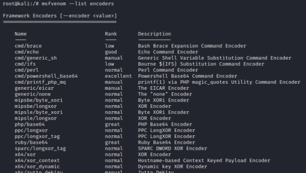

Encoders
msfvenom is a tool of the Metasploit framwork that takes a given payload, applies multiple rounds of encoding, and creates a standalone malicious file.
msfvenom is a very useful tool but, many antivirus vendors given its popularity focus on detecting its output
Because of msfvenom encoding is likely detected by antiviruses one of the best free tool for doing it is Veil-Evasion, which is a part of the Veil Framework.